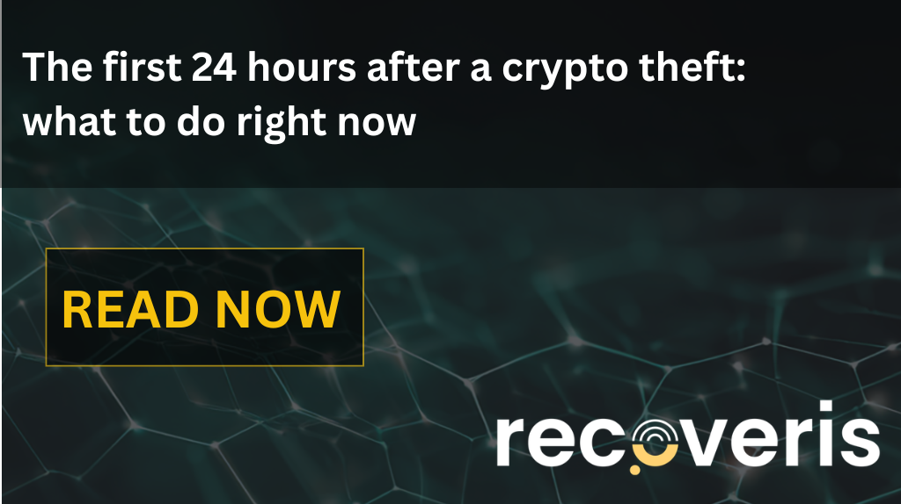
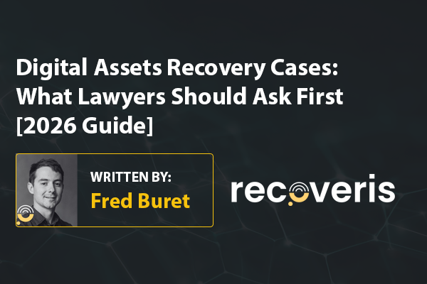

Recoveris in media

Podcast: AI scams, tracing stolen crypto across borders, and why Europe needs its own blockchain intelligence
Watch Podcast 🡥︎

Recoveris is the technical partner for EY's Distributed Ledger Analysis product offering
View Article 🡥︎

Bankier.pl's "crypto bridge to Moscow" investigation, built on our blockchain analysis
View Article 🡥︎


Recoveris analysis featured in money.pl investigation into Zondacrypto customer complaints
View Article 🡥︎


The future of combating money laundering lies not in data, but in its interpretation.
View Article 🡥︎


Does MiCA help recover stolen crypto? What EU victims and advisers need to know
Does MiCA help recover stolen crypto in the EU? Learn what provider rules cover, what they cannot reverse, and which steps still matter.
Recoveris Monthly – September 2026
The civil route in crypto cases, September’s investigation lessons, CoTrace, our NCA/FCA workshop and October events.

Crypto Source of Funds report: evidence checklist
What should a crypto Source of Funds report include? An evidence checklist for bank reviews, exchange records, DeFi profits and complex asset histories.

Crypto Asset Recovery Has a Speed Problem: There Is Nobody You Can Call
Crypto asset recovery moves at blockchain speed. Marcin Zarakowski and Patrick Prinz explain tracing, freezing and Europe’s intelligence gap.
Why I joined Recoveris
Aleksander Góra explains why he joined Recoveris to scale digital asset compliance, investigations and Source of Funds services for institutions.

Recoveris at the 10th Global Conference on Criminal Finances and Cryptoassets
Recoveris joins Europol, the Basel Institute and UNODC in Luxembourg for the 10th Global Conference on Criminal Finances and Cryptoassets, 15-16 September 2026.

How we preserved USD 1.6M and 1 BTC after a USD 40M BEC fraud
An anonymized corporate phishing case showing how wire-fraud proceeds were traced through stablecoins, instant exchanges, Bitcoin, Ethereum and XRP.
Recoveris Monthly – August 2026
A preliminary $116M wallet incident, manipulated collateral, false deposits, wallet keys, Source of Funds evidence and AI-enabled crime.

Why the model behind our AI investigator is a white box
Why Recoveris built a white-box model for blockchain investigation: explainable, repeatable, checked against investigated cases. Kateryna Kononova explains.

How Recoveris works with law enforcement on crypto cases
How Recoveris works with law enforcement on crypto cases: tracing, wallet monitoring, address blocking, and why the agency keeps investigative authority.

How we froze and preserved over USD 1.7M after fake VC impersonation
An anonymized case study of two related fake-VC thefts and the cross-chain response that froze or preserved more than USD 1.7 million.
Recoveris Monthly – July 2026
$85M in crypto exploits, governance attacks explained, stablecoin freeze windows, the Recoveris AI Investigator and blockchain attribution workflows.
FATF's seventh targeted update hands the freeze layer to the private sector
FATF's 7th Targeted Update names public-private partnership as essential to freezing illicit virtual assets. What that means operationally for VASPs and investigators.

Why Recoveris is building an AI investigator
Demand for blockchain investigations outgrew the expert pool. CEO Marcin Zarakowski on CoTrace, the AI investigator, and why compliance can't stay human-led.

The AI behind Recoveris: a white-box, vendor-neutral investigator built by forensic investigators
How Recoveris is building a white-box, vendor-neutral AI investigator, trained on real cases and run in a closed environment. CTO Oleksii Koshlatyi explains.

How EY & Recoveris support crypto-originated wealth onboarding
An illustrative private-bank scenario showing how EY DLA combines source-of-funds analysis, wallet-control verification and AML risk scoring.

When Blockchain Intelligence Is Not Enough: The Evidential Challenges of Crypto Wallet Freezing Orders
Blockchain intelligence can trace crypto across wallets and exchanges, but can it prove ownership? Fred Buret (Recoveris) and Sam Healey (SPH Legal) examine attribution, control and evidential proof in UK Crypto Wallet Freezing Order cases.

Recoveris welcomes BTCS S.A. as an investor
Recoveris signs an investment and distribution agreement with BTCS S.A., Poland's first listed Digital Asset Treasury Company.
Recoveris Monthly – June 2026
$46M in crypto exploits, the $344M Tether seizure, token approvals and multisig explained, AURA and a cross-border recovery case.

Where automated Source of Funds analysis falls short
Most Source of Funds reports stop at the tool's output. Where automated SoF analysis fails on cross-chain, DeFi, and privacy coins, and what court-ready documentation requires.

Crypto recovery in the United States: prejudgment freezes, alternative service and the cross-border reality
How crypto fraud victims recover assets in the US, with Sequor Law's Daniel Coyle on service, freezes, garnishment and cross-border enforcement.

The compliance gap in the agentic on-chain economy, and why we're building for it now
Value is moving on-chain and AI agents are about to transact at machine speed. Recoveris is building the AI digital asset investigator compliance needs.

What Humanity Protocol's $36M multisig breach teaches institutional custody teams
Humanity Protocol lost about $36M when a 3-of-6 multisig's keys all lived on one laptop. The custody lesson for institutions holding digital assets.

Upbit hot-wallet response: disrupting multi-chain laundering
A case study in predictive wallet identification and parallel coordination after stolen Solana assets began moving across chains and services.

Crypto recovery in Ukraine: wartime currency controls, the criminal route for crypto asset recovery, and the inherent volatility problem
Impacta Law's Dmytro Marchukov on recovering crypto in Ukraine: wartime currency controls, the criminal law route for crypto asset recovery, exchange cooperation and inherent asset volatility.

Tracing the TesseraDAO drain: the recovery window before Tornado Cash
TesseraDAO lost $2.4M to a stolen admin key on June 1. The funds hit Tornado Cash, but the trail before the mixer is where a recovery case gets built.

The $344M Tether case: what seizing $9 billion in a week means for asset recovery lawyers
US agencies seized about $9B in crypto in one week. The $344M Tether fight shows why seizure and victim restitution are two separate legal battles.
Recoveris Monthly – May 2026
$55M in crypto incidents, a $701M enforcement action, mixers explained for lawyers, the ZondaCrypto investigation and a Swiss $10.5M recovery.

Why being smart doesn't protect you from crypto scams
Crypto scams target the way the human brain processes trust, urgency, and loss. Recoveris breaks down five cognitive mechanisms scammers exploit, and why intelligence alone won't protect you.

Weekly Incident Report: May 18-24, 2026
The Verus bridge lost $11.58M on May 18, 2026 to the same source-destination value gap that killed Wormhole and Nomad. The response playbook starts the second funds move.

Weekly Incident Report: May 11–17, 2026
Over $28M drained across 5 incidents, May 11–17: Verus-Ethereum bridge exploit, THORChain TSS compromise, node-ipc npm supply chain attack, Transit Finance, Roaring Kitty RKC scam. Weekly DeFi incident breakdown by Recoveris.

Weekly Incident Report: May 4–10, 2026
Two DeFi exploits drained $7.3M and an FBI-led international operation restrained $701M in scam-center crypto, May 4–10. Weekly breakdown by Recoveris.

How our team helped recover $10.5M from a Swiss investment scam
Recoveris's investigators traced and froze USD 10.5M from a Swiss investment scam, in one of the largest crypto recoveries in Swiss history.

The first 24 hours after a crypto theft: what to do right now
What to do in the first 24 hours after losing crypto to theft or fraud. A practical checklist from blockchain investigators at Recoveris.

Weekly Incident Report: April 27–May 3, 2026
$12M+ drained April 27–May 3 across 6 incidents: Wasabi, SWEAT, Purrlend, Aftermath, Alchemix, dormant ETH wallets. Weekly breakdown by Recoveris.

The ZondaCrypto Case: how an on-chain investigation triggered one of Europe's biggest crypto scandals
How Recoveris's on-chain analysis surfaced Zondacrypto's 99.7% hot-wallet collapse and what the case shows about exchange transparency in the EU.

Weekly Incident Report: April 20–26, 2026
Over $6.3M drained across 3 incidents in April 20–26: Purrlend multisig role hijack, Giddy signature validation flaw, Volo Protocol Sui vault key compromise. Weekly incident report by Recoveris.

Weekly Incident Report: April 13–18, 2026
Over $300M drained across 4 incidents, April 13–18: KelpDAO bridge exploit, Rhea oracle hack, CoW Swap DNS hijack, Hyperbridge DOT mint. Weekly breakdown by Recoveris.

Weekly Incident Report: April 6–12, 2026
Over $4.1M drained across 3 incidents, April 6–12: Bitcoin Depot cyberattack, Aethir bridge exploit, Denaria Finance breach. Weekly breakdown by Recoveris.

Weekly Incident Report: March 31–April 5, 2026
Over $303M drained across 3 incidents: $285M Drift Protocol exploit, $18.2M social engineering theft, and a $72K automated wallet drain. Weekly incident breakdown by Recoveris.

Crypto recovery in Singapore: common law tools, token valuation, and what it takes to pursue recovery in Asia's leading digital asset hub
Crypto recovery in Singapore: DPT licensing, common law tools, token valuation challenges, and what recovery actually requires in a major Southeast Asian financial hub. With Wern Jhien Yam of Setia Law.

Fighting fire with algorithms: preparing for the era of autonomous financial crime
The era of autonomous financial crime is here. Discover how AI agents are transforming money laundering on-chain and how Recoveris is leveraging AI-driven defense.

Recoveris investigation leads to $1.5M+ USDT freeze after Tether blacklists wallets
Recoveris traced and identified wallets holding over $1.5M USDT, coordinated with Hong Kong Police, and secured permanent blacklisting by Tether - freezing stolen stablecoins before they could move beyond reach.

Weekly Incident Report: March 23–30, 2026
Over $24M drained across 3 incidents in March 23–30: unbacked stablecoin minting via key compromise, a supply chain credential theft, and a DeFi pool exploit. Weekly breakdown by Recoveris.

Weekly Incident Report: March 16–22, 2026
Over $26.7M drained across 3 incidents in March 16-22: a catastrophic infrastructure breach with unbacked stablecoin minting, a suspected state-sponsored hot wallet drain, and a gasless permit phishing attack.

Crypto recovery in Bulgaria: criminal courts, MiCA, and what recovery actually requires in practice
Practical insights on digital asset recovery in Bulgaria from our latest webinar with Konstantin Mikov of Mikov & Attorneys, covering VASP registration, MiCA, criminal court procedure, and exchange liability.

Weekly Incident Report: March 9–15, 2026
Over $4.1M drained across six incidents in March 9–15: flash loan exploits, front-end hijacks, a supply chain attack, and an NFT escrow theft. Weekly incident breakdown by Recoveris.
The democratization of deception: how generative AI is lowering the barrier to crypto crime
Generative AI is industrializing crypto fraud, lowering technical barriers for attackers. Learn how AI-driven deception is evolving and how Recoveris is responding.
Impersonation & Recovery Scams Warning
Official security advisory regarding Recoveris impersonation attempts. Learn how to identify fraudulent domains and recognize the red flags of secondary recovery scams to protect your digital assets.

Cayman Islands as a digital asset hub: insights from our latest webinar
Explore practical realities of digital asset recovery in the Cayman Islands, covering foundation companies, DAOs, legal wrappers, and enforcement challenges with Baker & Partners and Recoveris experts.

State-linked crypto tracing and cross-border recovery challenges: key insights from C5 webinar
Fred Buret joins international legal panel discussing advanced crypto tracing, recovery frameworks, and jurisdictional challenges in digital asset cases.

How Recoveris Traced $2.2M Through Tornado Cash
A case study of advanced blockchain forenscics done by Recoveris for 1inch, which allowed to trace $2.2M through Tornado Cash.

Recoveris joins IVAN: Enhanced cross-border coordination for digital asset investigations
Recoveris joins IVAN, the US federal law enforcement's public-private partnership for combating illicit virtual asset flows alongside major agencies and industry partners.

Can stolen crypto be recovered if you never reported it? Why most victims stay silent
Most crypto scam victims never report their loss. Learn why silence is so common, what the data shows about underreporting, and how Recoveris can still help you act even if you have not reported your stolen crypto yet.
Recoveris leaders present systematic intelligence frameworks to Polish Parliament crypto commission
Our CEO Marcin Zarakowski and Head of Product Roman Bieda addressed the Polish Parliamentary Commission for Crypto Assets and Blockchain Technology, delivering a presentation on how Poland could systematically combat cryptocurrency fraud.
Can stolen crypto be recovered? How to get your stolen cryptocurrency back in 2026
Yes, stolen crypto can be recovered. Learn how to get your stolen cryptocurrency back, what to do immediately after a crypto hack, and how recovery actually works.
Using Blockchain Evidence for Digital Assets Recovery: A Lawyer's Guide to Cryptocurrency Attribution
Learn how lawyers use blockchain evidence in court for digital assets recovery. Expert guide to cryptocurrency tracing, attribution, and building defendant-ready cases.

Digital Assets Recovery Cases: What Lawyers Should Ask First [2026 Guide]
Legal guide for digital assets recovery cases. Learn essential questions lawyers should ask clients in cryptocurrency theft, hack, and scam cases. Expert forensic advice.

Digital asset recovery in the British Virgin Islands: navigating high-stakes crypto disputes
The BVI has become the jurisdiction of choice for largest insolvencies and most complex disputes. Our latest webinar reveals why traditional legal tools work exceptionally well for digital assets here, and how the jurisdiction's established infrastructure continues to attract crypto restructuring cases.

Tracing and recovering illicit crypto activity - intelligence from the Nominis-Recoveris webinar
How automated forensic workflows and behavioral intelligence are transforming digital asset recovery. Insights on AI-enhanced investigations and critical factors determining recovery success.

Digital asset recovery in Poland: navigating Europe's crypto transit hub
Poland's high crypto adoption and minimal regulations have made it a transit hub for illicit funds. Our webinar reveals why criminal proceedings outperform civil litigation for asset recovery in this unique jurisdiction, and how victims can potentially recover funds within one year.

$950k / 330 ETH frozen and secured for recovery in DeFi protocol hack case
We successfully traced and secured 330 ETH for a client affected by a multimillion-dollar DeFi protocol exploit, demonstrating how rapid forensic response and coordinated enforcement enable effective asset recovery.

Recoveris partners with Provenance to strengthen compliance infrastructure for digital asset investigations
Recoveris partners with Provenance, a specialized compliance firm serving 323+ digital asset clients across 18+ jurisdictions. The collaboration strengthens the compliance infrastructure supporting blockchain investigations for VASPs, crypto funds, and DeFi protocols.

Recoveris Joins ICC FraudNet as Strategic Partner
Recoveris enters a strategic partnership with ICC FraudNet, connecting blockchain forensics with global asset recovery expertise. This provides ICC FraudNet's 81-country network of asset recovery lawyers with direct access to advanced on-chain intelligence and court-admissible documentation for crypto-related fraud cases.

Recoveris partners with GreyList Trace, bridging on-chain and off-chain intelligence
Together with GreyList Trace, we combine blockchain forensics with email networking analysis, connecting off-chain identities to on-chain activity, through advanced intelligence methodologies.

We’re teaming up with CipherLabs on advancing Web3 security infrastructure
Recoveris teams up with CipherLabs to build a more resilient security architecture for digital assets, combining proactive user protection with specialized response capabilities.

When the Louvre Gets Robbed, Recovery Odds Are 2-6%. We're Hitting a 30% Freeze Rate.
The Recoveris digital assets freeze rates are up to 30%, while lost art recovery odds are between 2% and 6%. Learn why expert blockchain intelligence delivers significantly better asset recovery rates than traditional theft investigation methods.

That Convenience Store ATM Could Drain Your Life Savings in Minutes
CNN investigation exposes how crypto ATM scams drained $240 million from Americans in six months through authority impersonation, extortion, and tech support fraud. Learn the attack methods and why recovery is so challenging.

Crypto Hack Losses Dropped 37%, But Investigators Face a Changing Threat Landscape
Crypto losses dropped 37% in Q3, but the threat landscape is shifting. Operational compromises now overtake code exploits, creating new forensic challenges for investigators.

The Reality of Crypto Scam Victims: We Need Systemic Change
Complex blockchain investigations are expensive, leaving many scam victims without help. We're building technology to make recovery accessible and calling for systemic change in law enforcement response.

Coordinated response transforms crypto crime fighting: major recoveries showcase the power of strategic partnerships
Strategic partnerships between law enforcement, private sector, and forensic specialists are transforming crypto crime fighting, with recent major recoveries by RCMP, Israeli intelligence, and Tether.

Recoveris Joins Operation Crypto Shield's Global Intelligence Network
Recoveris joins Operation Crypto Shield's Global Intelligence Network, the first multi-agency operation dedicated to tackling crypto-enabled threats through public-private intelligence sharing.

Recoveris AG Raises CHF 1M Financing Round to Build AI-Powered Blockchain Investigation Management System
Recoveris announced it has closed a CHF 1M strategic financing round. The round was led by VerifyVASP, the Singapore-based industry leading Travel Rule solution, with participation from additional strategic angel investors.

Recoveris Joins Global Blockchain Business Council (GBBC)
Recoveris joins the Global Blockchain Business Council (GBBC) to contribute specialized forensic intelligence and digital asset recovery expertise to the 500+ member organization driving blockchain adoption across 124 jurisdictions.

Recoveris Joins FinTech Poland to Advance Digital Asset Security
Recoveris joins FinTech Poland to advance digital asset security and compliance across Poland's expanding fintech ecosystem, connecting with key financial institutions and regulatory stakeholders to support institutional adoption.

Strategic Leadership Changes Accelerate Recoveris' Evolution Into Tech-Driven Blockchain Intelligence
Key leadership changes with new Head of Product and Head of Investigations, reflecting our evolution from expert-led investigations to investigation workflow solutions and AI-powered blockchain intelligence technology.

Recoveris partners with Hacken as specialized forensic and asset recovery partner
Recoveris teams up with Hacken to deliver digital asset protection combining AI-powered monitoring with forensic recovery capabilities. This creates end-to-end security for 1,500+ blockchain organizations through threat detection and asset recovery.

Recoveris teams up with BlackStorm Intel to bridge digital and physical security in web3
Recoveris partners with BlackStorm Intel to deliver web3 security combining blockchain forensics with physical intelligence. This addresses the growing threat of physical attacks on crypto holders while providing real-world verification and protection services.

Recoveris Selected for Swiss National Startup Team
Recoveris selected as one of 10 most promising startups for Swiss National Startup Team's 2025 Venture Leaders in Fintech program, just three months after incorporation. Building the industry standard for blockchain investigations and digital asset recovery.

Beyond recovery: we’re building the future of blockchain intelligence
Beyond crypto recovery: how Recoveris is creating the intelligence infrastructure for digital asset security. Discover our three-pillar framework transforming blockchain investigations.

Why blockchain intelligence and recovery require law, tech and enforcement working as one
Digital asset recovery demands coordinated expertise across technical forensics, legal frameworks, law enforcement, and compliance. Learn why multidisciplinary teams outperform single-background approaches.

Physical attacks on crypto holders are surging worldwide
Physical "wrench attacks" targeting cryptocurrency owners are surging globally, with 22 cases reported in 2025. A 74-year-old man's disappearance highlights how criminals use kidnapping and violence, moving beyond purely online threats.

Yes, freezing of crypto assets is possible, and here’s how: from myth to reality
Many believe stolen crypto assets are permanently lost once on the blockchain. Recoveris demonstrates how forensic intelligence, legal coordination, and strategic enforcement can trace, freeze, and recover digital assets through centralized choke points and compliance frameworks.

Romance Scams Evolve Into Sophisticated Cross-Border Laundering Networks
Romance scams evolved into sophisticated $36.9M cross-border laundering networks using shell companies and multi-jurisdictional crypto transfers. New DOJ case reveals why specialized forensic intelligence is essential for tracing complex international crime syndicates.

Beyond Automated Tools: How Recoveris Delivers Source of Funds Intelligence
Standard blockchain tools provide incomplete SOF analysis, stopping at bridges with potential sanctioned entities beyond. Recoveris' expert investigators deliver comprehensive cross-chain intelligence for high-stakes compliance cases.

The human backdoor: North Koreans infiltrate firms through fake interviews, while traditional security misses these threats
North Korean operatives infiltrate crypto firms through fake interviews using European proxies and AI tools. How insider threats stole $1.34B in 2024 and why traditional security fails to detect them.

FATF's 2025 Virtual Assets Update: Key Insights
The Financial Action Task Force (FATF) has released its June 2025 review of global implementation of AML standards for virtual assets and VASPs.

When Trust Becomes a Weapon: How Established Crypto Brands Are Being Exploited
Trust becomes a weapon when even hardware wallet leaders and major platforms fall victim to sophisticated phishing campaigns.

AI-Powered Social Engineering: The New Frontier of Digital Asset Theft
AI-powered deepfakes are driving 40% of high-value crypto fraud, with $6.7B stolen as attackers shift from exploiting code to exploiting human trust through sophisticated social engineering.

Reuters Investigation: How Recoveris Blockchain Forensics Exposed an FSB-Linked Teen Spy Network
Recoveris provided blockchain forensics analysis for this Reuters investigation, demonstrating how advanced intelligence capabilities are essential for national security investigations involving cryptocurrency.

Recoveris Launches Blockchain Intelligence and Asset Recovery Firm
Recoveris is a blockchain intelligence and asset recovery firm specializing in tracing, monitoring, and recovering compromised digital assets through advanced forensic methodologies.

Fighting fire with algorithms: preparing for the era of autonomous financial crime
The era of autonomous financial crime is here. Discover how AI agents are transforming money laundering on-chain and how Recoveris is leveraging AI-driven defense.
The speed asymmetry: Why manual crypto investigations are becoming obsolete
The defining metric of success in digital asset recovery is now speed. Learn how automation and AI are compressing the money laundering lifecycle into seconds, and why manual crypto investigations are becoming obsolete.